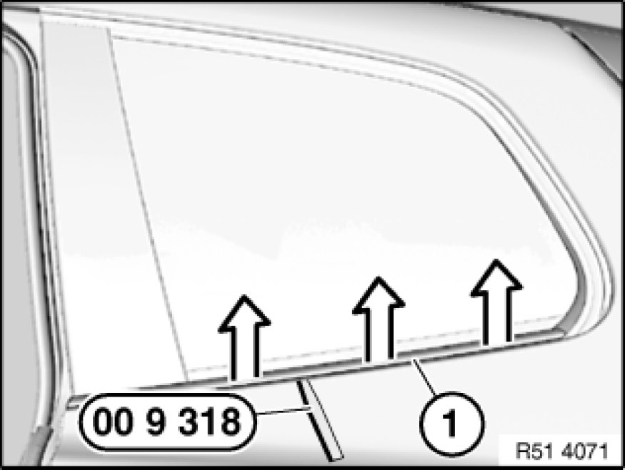
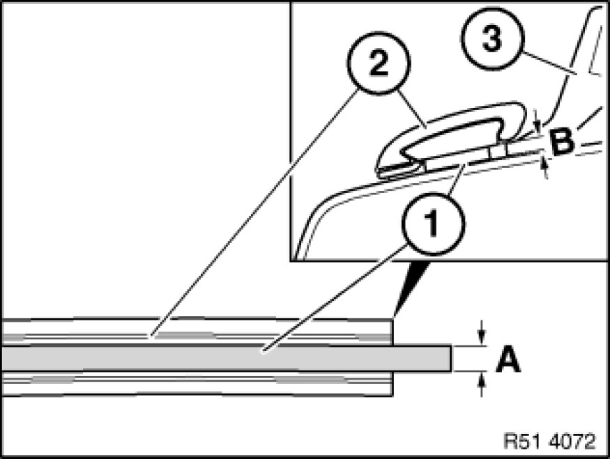

51 36 040 Removing and installing/replacing strip on side window at rear bottom left or right
51 36 040 - Removing and installing/replacing strip on side window at rear bottom left or right

Special tools required:
- 00 9 318 00 9 318 Multipurpose Wedge

Carefully lever out strip (1) with special tool 00 9 318 00 9 318 Multipurpose Wedge, starting at front, in direction of arrow.
Installation:
Clean bonding area with adhesive remover (sourcing reference: BMW Parts Service).
Air drying time: 1 minute
Important!
Adhesive areas must be dry and free of dust and grease.
Once it has been cleaned, do not touch the adhesive area with bare hands.

Installation:
Stick double-sided adhesive tape (1) (sourcing reference: BMW Parts Service) on middle of strip (2).
Remove protective film.
Press strip (2) firmly onto body (3).
Manual contact pressure: approx. 10 N/cm2
Note:
Firm thumb pressure creates approx. 50 Nm/cm2.
Double-sided adhesive tape (1):
Measurement a=7.0 mm -
Measurement b=0.8 mm -
Replacement:
Adhesive tape (1) already attached to strip (2).